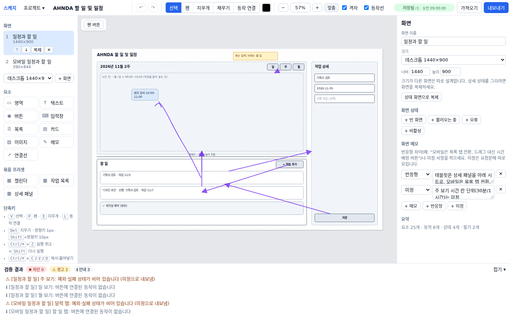
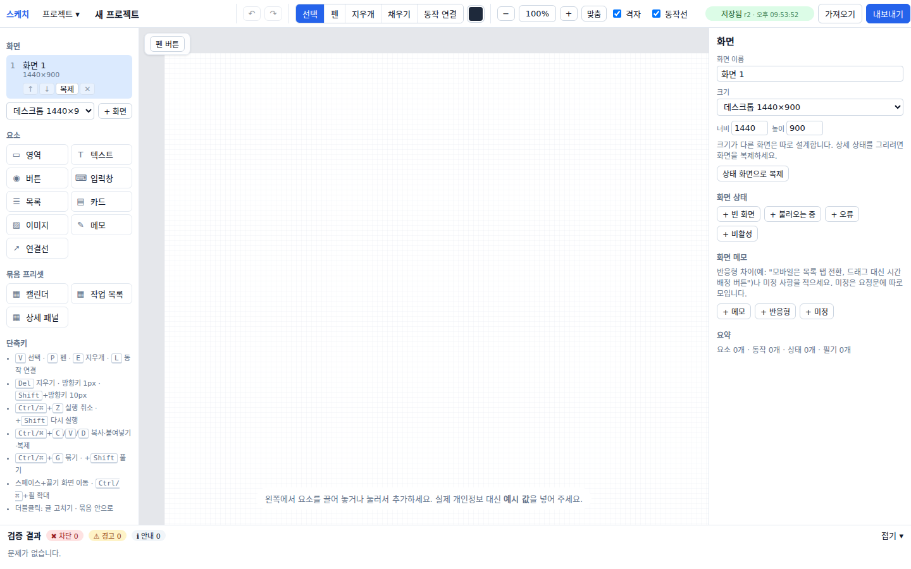
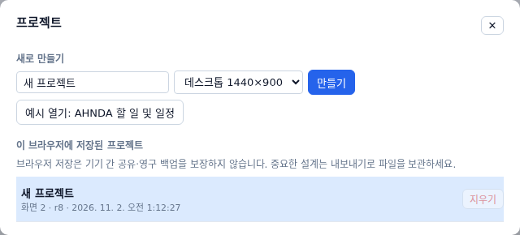
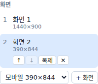
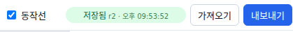

앱 화면을 그리고, 누르면 무엇이 되는지 적어서, AI 개발자에게 넘길 설계 묶음을 만듭니다
한눈에 보기

한눈에 보기
시작하기 · 1 / 5

시작하기 · 2 / 5

시작하기 · 3 / 5
시작하기 · 4 / 5
시작하기 · 5 / 5

알아 두기

| 표시 | 뜻 | 할 일 |
|---|---|---|
| 변경됨 저장 중… | 방금 고친 것을 저장하는 중 | 잠깐 기다립니다 |
| 저장됨 r2 · 시각 | 이 브라우저에 저장 끝 (r 숫자 = 저장한 횟수, 시각 = 마지막 저장) | 그대로 닫아도 됩니다 |
| 저장 실패 | 저장하지 못함 | 다시 저장 을 누르고, 안 되면 내보내기로 파일을 받아 둡니다 |
데이터는 어디에
기능 목록
바뀐 점
| 날짜 | 무엇이 바뀌었나 |
|---|---|
| 2026-11-02 | 모형 인식 · 채우기와 색 · 지우개로 무엇이든 지우기 · 펜 버튼 · 저장 표시 위치 |
| 2026-11-02 | 처음 만듦 -- 시작하기 · 데이터는 어디에 · 그리기·필기 · 동작·상태·검증 · 내보내기·가져오기 |